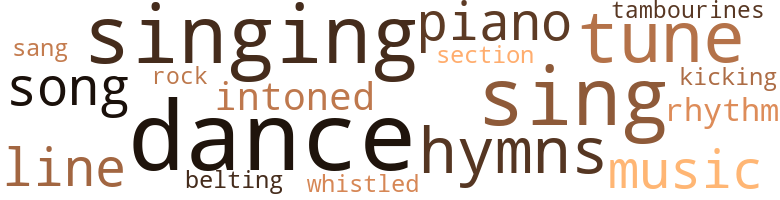

Music terms in the text
39 music-related terms matched in this text.
Most frequent terms in this topic: singing (4); dance (4); sing (4); tune (3); hymns (3)

belt_out.v.01
Definition: sing loudly and forcefully
| word |
sentence |
| belting |
The young adult choir begins belting a good old down home spiritual in the " Now " beat , with fervent soul rhythm . |
dance.n.01
Definition: an artistic form of nonverbal communication
| word |
sentence |
| dance |
" May I have this dance ? " said a timid voice from behind . |
| dances |
It 's pretty difficult to keep up with all the different dances they 're doing today . |
| dances |
The dances became increasingly uninhibited , shirts and ties were doffed and scattered on the floor and over furniture , and before I knew it , my Washington " debut " had evolved into an orgy . |
| dance |
There were n't many people on the street because it was only ten in the morning , and the few people you did see were just getting home from last night 's big dance . |
| dance |
I 'm engaged in many activities ; fraternity club meetings , dance parties , football practice , to say nothing of all them delectable chicks . |
dance.v.03
Definition: skip, leap, or move up and down or sideways
| word |
sentence |
| dance |
" Hey , you dance pretty neat . " |
hymn.n.01
Definition: a song of praise (to God or to a saint or to a nation)
| word |
sentence |
| hymns |
After Mrs. Peterson left , Ma began to sing one of her old-time hymns , " Lord , I Want to be a Christian in My Heart . " |
| hymns |
Mother then started singing one of her favorite old-time hymns , " He 's Got the Whole World in His Hands . " |
| hymns |
Mother then began singing , in a low soft voice , another one of her old down-home hymns , " Take Your Burdens to the Lord and Leave Them There . " |
kick.v.04
Definition: kick a leg up
| word |
sentence |
| kicking |
Nowadays I sho do n't see what you boys get out of kicking an old ball around . . . except bad feet . " |
music.n.01
Definition: an artistic form of auditory communication incorporating instrumental or vocal tones in a structured and continuous manner
| word |
sentence |
| music |
We always enjoy his fine music . . . My , that food sure is smelling mighty tempting , I guess I can stay for just a little while . " |
| music |
As we sped up Seventh Avenue , the street cluttered with good looking Negroes , teen-agers playing ball on West 127th Street , the pimps and hustlers on the corner of 125th Street looking for Johns , the junkies on 116th , the music blasting from the record shops , the smell of fish and chips deep fried in stale grease , the dingy tenements with drunks blocking the stoops , I suddenly began to feel an emptiness beyond expression . |
piano.n.01
Definition: a keyboard instrument that is played by depressing keys that cause hammers to strike tuned strings and produce sounds
| word |
sentence |
| piano |
Over the large baby grand piano hung a large portrait of a quite handsome fellow . |
| piano |
She sat there smiling and casually continued swaying back and forth to the rhythm of the tambourines and piano . |
rhythm.n.04
Definition: the arrangement of spoken words alternating stressed and unstressed elements
| word |
sentence |
| rhythm |
The young adult choir begins belting a good old down home spiritual in the " Now " beat , with fervent soul rhythm . |
| rhythm |
She sat there smiling and casually continued swaying back and forth to the rhythm of the tambourines and piano . |
rock_'n'_roll.n.01
Definition: a genre of popular music originating in the 1950s; a blend of black rhythm-and-blues with white country-and-western
| word |
sentence |
| rock |
" Why , they , " he said pointing to the choir of fine young blacks sweating under bright red satin robes but nonetheless wearing wide white-toothed smiles , " could well be out there in the world singing rock and roll for the devil , but . . . here they are , look at 'em , do n't they look fine ? " |
section.n.01
Definition: a self-contained part of a larger composition (written or musical)
| word |
sentence |
| section |
Then one morning I saw an ad in the personal section of the morning newspaper . |
sing.v.02
Definition: produce tones with the voice
| word |
sentence |
| sang |
As I passed through the plush entryway , the juke box was blaring an old favorite of mine , " You Send Me " by the late but irreplaceable Sam Cooke : Sam Cooke had always known how to deliver a song , it seems , whenever he sang , he reached the very soul of the listener . . . . |
| sing |
I would like very much if George would play and sing for us . |
| sing |
Mama began to sing softly : If you trust and never doubt , He will surely bring you out , Take your burdens to the Lord , And leave them there . . . " Lord , I wonder who that could be at this time - oh , hello , Janice . " |
| sing |
After Mrs. Peterson left , Ma began to sing one of her old-time hymns , " Lord , I Want to be a Christian in My Heart . " |
| singing |
Mother then started singing one of her favorite old-time hymns , " He 's Got the Whole World in His Hands . " |
| sing |
My , my , does n't they know how to sing your soul happy ! " |
| singing |
The choir began singing a fast tune . |
singing.n.01
Definition: the act of singing vocal music
| word |
sentence |
| singing |
" Why , they , " he said pointing to the choir of fine young blacks sweating under bright red satin robes but nonetheless wearing wide white-toothed smiles , " could well be out there in the world singing rock and roll for the devil , but . . . here they are , look at 'em , do n't they look fine ? " |
| singing |
Mother then began singing , in a low soft voice , another one of her old down-home hymns , " Take Your Burdens to the Lord and Leave Them There . " |
song.n.01
Definition: a short musical composition with words
| word |
sentence |
| song |
As I passed through the plush entryway , the juke box was blaring an old favorite of mine , " You Send Me " by the late but irreplaceable Sam Cooke : Sam Cooke had always known how to deliver a song , it seems , whenever he sang , he reached the very soul of the listener . . . . |
| song |
The lyrics of this particular song had special meaning to me . |
tambourine.n.01
Definition: a shallow drum with a single drumhead and with metallic disks in the sides
| word |
sentence |
| tambourines |
She sat there smiling and casually continued swaying back and forth to the rhythm of the tambourines and piano . |
tone.v.01
Definition: utter monotonously and repetitively and rhythmically
| word |
sentence |
| intoned |
As the Reverend intoned " Ashes to ashes and dust to dust " in a plaintive voice , she cried , " Oh my Lord Jesus , no , not Janice . " |
| intoned |
" The Lord love the cheerful giver , " Reverend Shields intoned , " now let us give unto the Lord . " |
tune.n.01
Definition: a succession of notes forming a distinctive sequence
| word |
sentence |
| tune |
As his tune tore at the nerves of my heart , I closed my eyes . |
| line |
I had to explain your sudden appearance and . . . and since we were both in the shower at the same time , I had to hand her a line . " |
| tune |
I knew she was on the verge of tears , but she just stood over the sink and softly hummed a tune . |
| line |
You probably had the fellows standing in line just to look at you . " |
| tune |
The choir began singing a fast tune . |
whistle.v.01
Definition: make whistling sounds
| word |
sentence |
| whistled |
The girls are jealous of my new wig , and guess what , a couple of fellows whistled at me during lunch hour . |
Violence terms in the text
51 violence-related terms matched in this text.
Most frequent terms in this topic: hurt (7); hate (6); ball (4); fight (3); fighting (3)
aggravation.n.01
Definition: an exasperated feeling of annoyance
| word |
sentence |
| exasperation |
Shortly after the doctor left in exasperation , Mr. Banks decided to go out to get something to eat . |
attack.v.02
Definition: attack in speech or writing
| word |
sentence |
| assailed |
But doubt again assailed me : away . . . away from what ? |
battle.v.01
Definition: battle or contend against in or as if in a battle
| word |
sentence |
| battled |
They battled and raced for phone booths like a pack of wild dogs . |
electrocution.n.02
Definition: killing by electric shock
| word |
sentence |
| electrocution |
" You will be imprisoned for a period of five months , at the end of which you will be executed by electrocution . |
envy.n.01
Definition: a feeling of grudging admiration and desire to have something that is possessed by another
| word |
sentence |
| envy |
Gloria did n't answer , she just continued talking : " When I go to church Sunday , I 'll be the envy of every woman , chicken and child . " |
fight.n.05
Definition: a boxing or wrestling match
| word |
sentence |
| fight |
" Here , have some more eggs before you girls get into a fight . |
fight.v.02
Definition: fight against or resist strongly
| word |
sentence |
| fight |
" Go ahead , take it , I ca n't fight any longer . " |
| fighting |
" Gee , " said George , " it 's too bad your folks is always fighting . " |
| fighting |
" Oh , they ai n't fighting , man , you know , they 're - uh , doing it . " |
| fight |
I began to think about Pete , and how we used to fight and then make up . |
| fought |
We fought like wild hogs , with furniture and glassware scattering far and wide , until the police came and broke it up . |
| defending |
I could only too clearly imagine what her parents , who were among the more prominent Harlem families , would think of her for defending someone who seemed , for all intents and purposes , a callous criminal . |
| fighting |
They were fighting and pushing to gain entrance , producing all kinds of ID cards . |
hassle.n.02
Definition: disorderly fighting
| word |
sentence |
| tussle |
She started to leave , saying , " I 'll just stop over again later , I 'll be seeing you ... " He grabbed her around her waist , dropping the bottle in the tussle . |
hate.v.01
Definition: dislike intensely; feel antipathy or aversion towards
| word |
sentence |
| hate |
" O.K. , but I hate like hell to do it , you 've got some of the best cakes I 've ever come across . " |
| hate |
I really hate to disturb you so late , but it 's rather important that I see him . " |
| hate |
" I 'm sorry , Mother , it 's just that I hate to see you worry about George . |
| hated |
I hated it when she talked this way . |
| hate |
I hate to admit it , but you 're absolutely right . " |
| hate |
True , you have caused me to hate you , but I 'm not so old that I 've forgotten that we men sometimes get out of hand when it comes to women . |
| detested |
Suddenly , I detested that feeling of being sheltered in mother 's arms . |
| hate |
" Yes , you 're right , my dear , but I hate to see my little George go so far away from home . |
hostility.n.01
Definition: a hostile (very unfriendly) disposition
| word |
sentence |
| hostility |
They stared at me with open hostility for a few moments , then averted their gaze . |
injury.n.01
Definition: any physical damage to the body caused by violence or accident or fracture etc.
| word |
sentence |
| harm |
I did n't mean any harm . |
| harm |
I reckon it wo n't do no harm . |
kick.v.04
Definition: kick a leg up
| word |
sentence |
| kicking |
Nowadays I sho do n't see what you boys get out of kicking an old ball around . . . except bad feet . " |
kill.v.10
Definition: cause the death of, without intention
| word |
sentence |
| kill |
She was dressed to kill , and she had one of them hairdos , oh what do you call them Gloria , that makes your hair look fuller than it really is . " |
| killing |
I do n't know why they did n't consider this to be a suicide note ; but they thought that I had forced him to write this before killing him . |
| killed |
" Your Honor , it was I , not that poor boy ... I killed my own son . " |
| kill |
" It was an accident , I tell youl I did n't mean to kill my own son . |
knife.n.02
Definition: a weapon with a handle and blade with a sharp point
| word |
sentence |
| knife |
Why , you 're liable to walk out of there with a knife in your back . |
murder.n.01
Definition: unlawful premeditated killing of a human being by a human being
| word |
sentence |
| murder |
" Naturally , I was afraid that I would be charged with murder . " |
murder.v.01
Definition: kill intentionally and with premeditation
| word |
sentence |
| hit |
Her husband must 've hit the jackpot or something . " |
musket_ball.n.01
Definition: a solid projectile that is shot by a musket
| word |
sentence |
| ball |
I 'm sorry if I appeared to be an odd ball . " |
| ball |
Nowadays I sho do n't see what you boys get out of kicking an old ball around . . . except bad feet . " |
| ball |
As we sped up Seventh Avenue , the street cluttered with good looking Negroes , teen-agers playing ball on West 127th Street , the pimps and hustlers on the corner of 125th Street looking for Johns , the junkies on 116th , the music blasting from the record shops , the smell of fish and chips deep fried in stale grease , the dingy tenements with drunks blocking the stoops , I suddenly began to feel an emptiness beyond expression . |
| ball |
George was given five cents to put into the plate as it came to their pew , but instead he deposited a little ball of Captain Marvel Bubble Gum . |
pain.v.02
Definition: cause emotional anguish or make miserable
| word |
sentence |
| hurt |
But ... I reckon a little taste of your apple wine would n't hurt none . " |
| hurt |
Do n't worry , I wo n't hurt you . |
| hurt |
" Well , you must go and tell her poor husband where she is , or let him know that she ai n't hurt or anything . |
| hurt |
Why must you always say things to hurt me . " |
| hurt |
" Why do you do things to hurt me ? |
| hurt |
I did n't say anything , I was so hurt . |
| hurt |
I 'd rather die than hurt you , Mama , be strong and please do n't cry . |
raid.v.01
Definition: search without warning, make a sudden surprise attack on
| word |
sentence |
| raided |
The place had been raided after a tip to the police that Joe was peddling more than booze . |
| raid |
At night we would raid the girls ' dorm and did those panties ever fly . |
suicide.n.01
Definition: the act of killing yourself
| word |
sentence |
| suicide |
Death was believed to be a suicide , as a note was found . |
| suicide |
I do n't know why they did n't consider this to be a suicide note ; but they thought that I had forced him to write this before killing him . |
weather.v.01
Definition: face and withstand with courage
| word |
sentence |
| endured |
We 've endured . |
wound.n.01
Definition: an injury to living tissue (especially an injury involving a cut or break in the skin)
| word |
sentence |
| wounds |
She rushed into the bathroom and came out with a wet towel with which she began to cleanse Gloria 's wounds , " Now please tell me , what happened ? " |
wrath.n.01
Definition: intense anger (usually on an epic scale)
| word |
sentence |
| wrath |
" Lord Jesus , forgive me , Lord have mercy on my sin-sick soul , save me and let not thy wrath fall upon me , " the familiar voice wailed . |
Religion terms in the text
110 religion-related terms matched in this text.
Most frequent terms in this topic: church (25); God (23); sermon (7); Jesus (6); prayer (6)

amen.n.01
Definition: a primeval Egyptian personification of air and breath; worshipped especially at Thebes
| word |
sentence |
| Amens |
The Amens were n't so loud this time . |
baptist.n.01
Definition: follower of Baptistic doctrines
| word |
sentence |
| Baptist |
Little George sat nervously on the edge of the hard wood folding chairs which were now church pews , fumbling with the tom pages of the worn-out Baptist Hymnal . |
blessing.n.05
Definition: the act of praying for divine protection
| word |
sentence |
| blessing |
The Lord is gon na keep on blessing you . |
| blessing |
But it sho would be a blessing if George is called to preach the Gospel . |
| blessing |
God will surely renew your strength , you will receive a blessing . |
christian.n.01
Definition: a religious person who believes Jesus is the Christ and who is a member of a Christian denomination
| word |
sentence |
| Christian |
You are a child of the Lord , and a wig just ai n't becoming to a Christian . |
church.n.02
Definition: a place for public (especially Christian) worship
| word |
sentence |
| church |
It 's much better than sitting here in this funky church . |
| church |
But , there was an occasional breeze when one of the church sisters ran down the aisle shouting and screaming like a crazy person : " Yes , Lord , yes , Lord ! " |
| church |
Or when the church mother threw her purse across the entire width of the church . |
| church |
Or when the church mother threw her purse across the entire width of the church . |
| church |
As George lay there , he thought of how lucky he was that his grandmother had forgotten to whip him for chewing gum in church . |
| church |
He led me downstairs to the church . |
| church |
Sensing the presence of others in the church , she abruptly ended her plea and turned to face us . |
| church |
The Reverend , who seemed pleased at finding Gloria in church and so fervently appealing to the Lord during the middle of the week , smoothed over the awkward situation by suggesting that we join Gloria in prayer . |
| church |
Gloria and I left the church together , and talked about the goodness of God during our brief walk . |
| church |
" Baby , we ought to start going back to church . " |
| church |
Yes , going to church each Sunday was as natural as hog head and black-eyed peas on New Year 's Eve . |
| church |
Little George sat nervously on the edge of the hard wood folding chairs which were now church pews , fumbling with the tom pages of the worn-out Baptist Hymnal . |
| church |
" My dear , " said Ma , " you do n't go to church to show off . |
| church |
You go to church to worship the Lord God . " |
| church |
Shit , you church people , always praying and ( hic ) for what ? |
| church |
" Come on out to church if you can . |
| church |
" Wake up , boy , it do n't look nice to sleep in church . |
| church |
The rustling of coins slowly filled the church . |
church.n.04
Definition: the body of people who attend or belong to a particular local church
| word |
sentence |
| church |
" If he turns out to be the worst sinner in the world , I 'll never take him to our church . |
| church |
The church is the Lord 's house . |
| Church |
Beautiful people . . . Beautiful Baptist Church . . . Beautiful Jesus Christ . |
| church |
Why , they ai n't been out to church since last Easter and - " At that moment Pete entered . |
| church |
Just before she reached the stairs , Ma yelled , " See you at church Sunday ? " |
| church |
Gloria did n't answer , she just continued talking : " When I go to church Sunday , I 'll be the envy of every woman , chicken and child . " |
| church |
She was ironing her favorite yellow and white polka dot dress , for tomorrow she was to wear it at church . |
| Church |
After the choir had finished their number , Reverend Shields rose slowly to his feet , his long lean body slightly bent to avoid hitting a light bulb dangling from the ceiling , took his handkerchief from his pocket and wiped his sweaty face , and said : " Let the Church say ' Amen . ' " |
| church |
" Y' all children please keep quiet , church ai n't over yet . " |
confession.n.05
Definition: the document that spells out the belief system of a given church (especially the Reformation churches of the 16th century)
| word |
sentence |
| confession |
I do believe that that woman 's confession will make you a free man , and that 's just great . " |
eden.n.01
Definition: any place of complete bliss and delight and peace
| word |
sentence |
| heaven |
" Yep , baby , we 've made it to fourth heaven . " |
| Heaven |
And one day , Heaven would be mine . |
| Heaven |
Heaven . . . Heaven . . . sweet Heaven . . . and here we are , in the right place - church . |
| Heaven |
Earth has no sorrow that Heaven can not heal . " |
| heavens |
It was a dreary rainy day , almost as if the heavens were weeping for me . |
god.n.03
Definition: a man of such superior qualities that he seems like a deity to other people
| word |
sentence |
| God |
I was n't worried about a thing in court because God had shown me that everything would be all right . |
| God |
" Good night and God bless you , Sister Wilson , Sister Gloria , and Sister Emma , I sho nuff ate heavy this day . |
| God |
A man of God should always have a good appetite ; after preaching the Word to sinners , you need to eat big . |
| God |
She kissed me and said we 'd talk about everything in the morning , that no matter how bad things were , God was able . |
| God |
God made you just the way you are , and if He 'd intended folks to wear wigs He would have made extra hair pieces . " |
| God |
You 're here to forget all that , and by God , I 'm gon na see to it that you do . " |
| God |
Though it seems to contradict everything I 'd done and everything I 'd ever thought in terms of myself , I decided to call upon God . |
| God |
" Yes , my boy , all things are possible with God . |
| God |
As we entered I felt an unusual closeness with God . |
| God |
" Ai n't God good ? " she asked rhetorically . |
| God |
Gloria and I left the church together , and talked about the goodness of God during our brief walk . |
| God |
" Oh thank God , she 's all right , she 's all right . " |
| God |
And for this , she thanked God . |
| God |
You go to church to worship the Lord God . " |
| God |
The minister continued : " We do thank God for that most beautiful soul-stirring selection , coming from our young folks . |
| God |
It - it seems so unfair for God to take away an only child . |
| God |
He said He would never leave you comfortless , you 're not alone , God is always near . |
| God |
I know your heart has been broken , but do n't blame God . |
| God |
God will surely renew your strength , you will receive a blessing . |
| God |
Remember God cares , He sho nuff cares . " |
| God |
" Yes indeed , I tell you children , we 'd all better get right with God , and as old Dr. Watts said : ' Do it now / For the Lord do n't like ugly , and my God is coming back soon , so we 'd all had better be ready to meet him . " |
| God |
" Yes indeed , I tell you children , we 'd all better get right with God , and as old Dr. Watts said : ' Do it now / For the Lord do n't like ugly , and my God is coming back soon , so we 'd all had better be ready to meet him . " |
| God |
Its reflection shone brightly on the giant silver wings . . . like a ruby being placed in the finger of God . |
godhead.n.01
Definition: terms referring to the Judeo-Christian God
| word |
sentence |
| Almighty |
We knelt down , on each side of her , and communed with the Almighty for several minutes . |
hell.n.01
Definition: any place of pain and turmoil
| word |
sentence |
| hellhole |
You know I would n't be caught dead in that hellhole . |
hymn.n.01
Definition: a song of praise (to God or to a saint or to a nation)
| word |
sentence |
| hymns |
After Mrs. Peterson left , Ma began to sing one of her old-time hymns , " Lord , I Want to be a Christian in My Heart . " |
| hymns |
Mother then started singing one of her favorite old-time hymns , " He 's Got the Whole World in His Hands . " |
| hymns |
Mother then began singing , in a low soft voice , another one of her old down-home hymns , " Take Your Burdens to the Lord and Leave Them There . " |
jesus.n.01
Definition: a teacher and prophet born in Bethlehem and active in Nazareth; his life and sermons form the basis for Christianity (circa 4 BC - AD 29)
| word |
sentence |
| Jesus |
Beautiful people . . . Beautiful Baptist Church . . . Beautiful Jesus Christ . |
| Jesus |
Come , let us go to Him , just a little talk with Jesus makes things right . " |
| Jesus |
" Lord Jesus , forgive me , Lord have mercy on my sin-sick soul , save me and let not thy wrath fall upon me , " the familiar voice wailed . |
| Jesus |
As the Reverend intoned " Ashes to ashes and dust to dust " in a plaintive voice , she cried , " Oh my Lord Jesus , no , not Janice . " |
| Jesus |
" Hmmmph , I still do n't like it , and I ai n't worried because I settled with my Jesus long time ago . " |
| Jesus |
On one side the fan reads ' Holy , Holy , Holy , ' with a picture of a white man with soft blue eyes , a beard and long blond hair that curled at his shoulders ; his name : Jesus Christ . |
jew.n.01
Definition: a person belonging to the worldwide group claiming descent from Jacob (or converted to it) and connected by cultural or religious ties
| word |
sentence |
| Jew |
Those Jew people sho know how to take ad - " " Mother , I 'll be all right ! |
messiah.n.01
Definition: any expected deliverer
| word |
sentence |
| Christ |
Beautiful people . . . Beautiful Baptist Church . . . Beautiful Jesus Christ . |
| Christ |
On one side the fan reads ' Holy , Holy , Holy , ' with a picture of a white man with soft blue eyes , a beard and long blond hair that curled at his shoulders ; his name : Jesus Christ . |
muse.n.01
Definition: in ancient Greek mythology any of 9 daughters of Zeus and Mnemosyne; protector of an art or science
| word |
sentence |
| muse |
She guessed that what had recently been revealed about her nephew had caused her to muse about the possibility of sexual , deviation in the Reverend . |
praise.n.02
Definition: offering words of homage as an act of worship
| word |
sentence |
| praise |
Mama exclaimed in praise of the Delma stewardess when I met the family upon their arrival in Washington . |
prayer.n.01
Definition: the act of communicating with a deity (especially as a petition or in adoration or contrition or thanksgiving)
| word |
sentence |
| prayer |
" Well good night , " Mama said , " see you tomorrow at prayer meeting , the Lord willing . " |
| prayer |
* " He ai n't gotten home yet and - " " Now do n't fret none , let 's have a word of prayer . |
| prayer |
Most gracious Father - " " Thanks for the prayer , Reverend , I do feel a lot better now . |
| prayer |
" Good night , my dears , and say a prayer for our boy . " |
| prayers |
" Now say your prayers , son , " she said as she gently rubbed her wrinkled hands across George 's cheek : " Now I lay me down to sleep , I pray the Lord my soul to keep . |
| prayer |
The Reverend , who seemed pleased at finding Gloria in church and so fervently appealing to the Lord during the middle of the week , smoothed over the awkward situation by suggesting that we join Gloria in prayer . |
| prayers |
" Sure , " Gloria said , " and remember me in your prayers . " |
| prayer |
Then she closed her eyes , as if she were saying a prayer . |
preacher.n.01
Definition: someone whose occupation is preaching the gospel
| word |
sentence |
| preacher |
I tell you , that boy 's gon na be a preacher ; he believe in being clean . |
| preachers |
" Well I hope you 're right , " said Gloria , " little devils do make fine preachers - or so I 've been told . " |
religion.n.01
Definition: a strong belief in a supernatural power or powers that control human destiny
| word |
sentence |
| faith |
It was Gloria who brought her to the Reverend , who gave her the faith and strength to go on , " Mama said . |
saint.n.02
Definition: person of exceptional holiness
| word |
sentence |
| angel |
I have n't exactly been an angel myself , as you well know . |
| saint |
I 'm no saint , not yet anyway . " |
| angel |
Baby Doll , the little angel devil . |
satan.n.01
Definition: (Judeo-Christian and Islamic religions) chief spirit of evil and adversary of God; tempter of mankind; master of Hell
| word |
sentence |
| Devil |
I suppose you might say , ' The Devil made me do it . ' " |
| devil |
" Why , you little devil , you might as well give up . |
| devils |
" Well I hope you 're right , " said Gloria , " little devils do make fine preachers - or so I 've been told . " |
| Satan |
Why , that old Satan 's brew has taken over your tongue . |
| devil |
" Why , they , " he said pointing to the choir of fine young blacks sweating under bright red satin robes but nonetheless wearing wide white-toothed smiles , " could well be out there in the world singing rock and roll for the devil , but . . . here they are , look at 'em , do n't they look fine ? " |
| devil |
Baby Doll , the little angel devil . |
sermon.n.02
Definition: a moralistic rebuke
| word |
sentence |
| sermon |
There were the usual mothers shopping at Blumstein 's Department Store , Harlem 's answer to Lord and Taylor 's , and the day drifters who had nothing better to do than stand on the corner of Seventh Avenue and listen to political bull from a man on a soap box on the west side of the street and a sermon on how to get saved from a dude on the east side . |
| sermon |
My , was n't that a wonderful sermon he gave this morning ? |
| sermon |
You need n't preach to me , Emma , I 've heard my sermon for the day . |
| sermon |
After wiping his brow , the minister then reached into his pocket , took out an old-fashioned pair of spectacles , and began to deliver his sermon . |
| sermon |
But nothing is going to make me believe that she remained awake during that sermon . |
| sermon |
" Rev , I sure did enjoy your sermon this morning . |
| sermon |
" Reverend , " Mama put in , " your sermon sho did my heart good . |
temple.n.03
Definition: an edifice devoted to special or exalted purposes
| word |
sentence |
| temples |
George turned facing a short guy with a chubby face rimmed by hair slightly graying at the temples . |
tone.v.01
Definition: utter monotonously and repetitively and rhythmically
| word |
sentence |
| intoned |
As the Reverend intoned " Ashes to ashes and dust to dust " in a plaintive voice , she cried , " Oh my Lord Jesus , no , not Janice . " |
| intoned |
" The Lord love the cheerful giver , " Reverend Shields intoned , " now let us give unto the Lord . " |
worship.n.01
Definition: the activity of worshipping
| word |
sentence |
| worship |
You go to church to worship the Lord God . " |
worship.v.02
Definition: show devotion to (a deity)
| word |
sentence |
| worshipping |
" Oh , I 'll be worshipping God , Mother . |